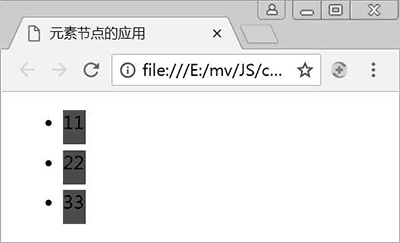
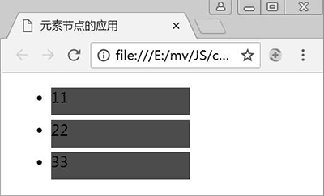
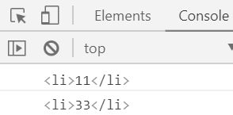

首页 > 编程笔记
JS获取子节点（子元素）
在 JavaScript 中，使用元素节点的相关属性可以获取元素的子节点、第一个子节点、最后一个子节点。
【例 1】获取元素子节点。
上述 JS 代码中使用了 childNodes 属性来获取 ul 元素的所有子节点，并使用了 aLi[i].nodeType==1 来判断遍历到的子节点是否为元素节点。那么可否省略这个元素节点的判断呢？答案是不能省略。因为使用 childNodes 属性获取的子节点可能包括空格、换行等内容组成的文本节点。
在例 3 中的 HTML 代码中，可以看到 ul 元素下的各个 <li> 是换行显示的，所以 ul 元素内容中包括了换行，同时也包括了一些空格。此时使用 alert(aLi.length)，将会看到结果为 7，即 ul 下包含了 7 个子节点，其中 3 个 li 元素节点，其他的就是由换行和空格组成的文本节点。
如果不想进行子节点类型的判断，则需要使用 children 属性来获取 ul 元素的子节点，JS 代码作如下修改：
【例 2】获取元素子节点。
获取元素的子节点
使用元素的 childNodes 和 children 属性可以获取元素的子节点，其中 childNodes 获取的是元素的所有子节点，其中除了元素子节点外，还可能包含文本节点及注释节点；而 children 属性获取的则全部是元素子节点。【例 1】获取元素子节点。
<!doctype html>
<html>
<head>
<meta charset="utf-8">
<title>获取元素子节点</title>
<style>
li{
width:20px;
height:30px;
background:red;
margin:5px;
transition:width 2s;//过渡属性，实现从一种样式逐渐改变到另一种样式
}
</style>
</head>
<body>
<ul id='ul1'>
<li>11</li>
<li>22</li>
<li>33</li>
</ul>
<script>
var oUl = document.getElementById('ul1');
var aLi = oUl.childNodes;//获取ul元素的所有子节点
document.onclick = function(){
for(var i = 0; i < aLi.length; i++){
if(aLi[i].nodeType == 1){//判断节点是否为元素节点
aLi[i].style.width = '150px';
}
}
};
</script>
</body>
</html>
上述代码的功能是实现单击文档窗口时，li 元素的长度在 2s 内实现从 20px 逐渐改变为 150px。例 3 中的 transition 是一个 CSS3 属性，实现从一种样式逐渐过渡到另一种样式，该属性需要同时指定在哪个属性上进行样式过渡以及整个过渡时长。样式代码中设置了 li 元素的初始长度，li 元素的最终长度通过 JS 的单击事件来设置。上述 JS 代码中使用了 childNodes 属性来获取 ul 元素的所有子节点，并使用了 aLi[i].nodeType==1 来判断遍历到的子节点是否为元素节点。那么可否省略这个元素节点的判断呢？答案是不能省略。因为使用 childNodes 属性获取的子节点可能包括空格、换行等内容组成的文本节点。
在例 3 中的 HTML 代码中，可以看到 ul 元素下的各个 <li> 是换行显示的，所以 ul 元素内容中包括了换行，同时也包括了一些空格。此时使用 alert(aLi.length)，将会看到结果为 7，即 ul 下包含了 7 个子节点，其中 3 个 li 元素节点，其他的就是由换行和空格组成的文本节点。
如果不想进行子节点类型的判断，则需要使用 children 属性来获取 ul 元素的子节点，JS 代码作如下修改：
<script>
var oUl = document.getElementById('ul1');
var aLi = oUl.children;//获取ul元素的所有元素子节点
document.onclick = function(){
for(var i = 0; i < aLi.length; i++){
aLi[i].style.width = '150px';
}
};
</script>
例 1 在 Chrome 浏览器中的运行结果如图 1 和图 2 所示。

图 1：li 元素的最初效果
图 1：li 元素的最初效果

图 2：单击文档窗口后的 li 元素效果
图 2：单击文档窗口后的 li 元素效果
获取元素第一个子节点和最后一个子节点
使用元素的 firstChild 和 lastChild 属性可以分别获取元素的第一个和最后一个子节点，使用元素的 firstElementChild 和 lastElementChild 属性可以分别获取元素的第一个和最后一个元素子节点。【例 2】获取元素子节点。
<!doctype html>
<html>
<head>
<meta charset="utf-8">
<title>获取元素第一个和最后一个元素子节点</title>
</head>
<body>
<ul id='ul1'>
<li>11</li>
<li>22</li>
<li>33</li>
</ul>
<script>
var oUl = document.getElementById('ul1');
var li1 = oUl.firstElementChild;//获取ul元素的第一个元素子节点
var li2 = oUl.lastElementChild;//获取ul元素的最后一个元素子节点
console.log(li1);
console.log(li2);
</script>
</body>
</html>
上述代码在 Chrome 浏览器中的运行结果如图 3 所示。

图 3：ul 元素的第一个和最后一个元素子节点
图 3：ul 元素的第一个和最后一个元素子节点
关注公众号「站长严长生」，在手机上阅读所有教程，随时随地都能学习。内含一款搜索神器，免费下载全网书籍和视频。

微信扫码关注公众号